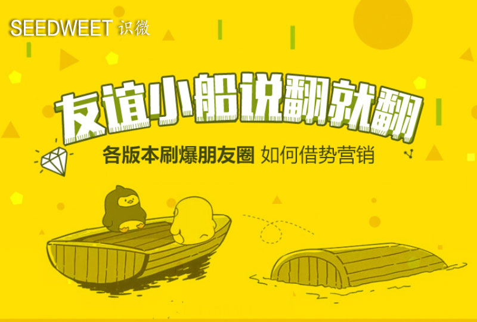

继“反手摸肚脐”、“A4腰”、“主要看气质”等话题之后，“友情的小船说翻就翻”以迅雷不及掩耳之势刷爆了微信朋友圈、微博、各大论坛等主流社交网络平台，成为了时下的爆款话题。
“翻船体”的爆红来源于网友 @喃东尼
漫画《友谊的小船说翻就翻》，以图文并茂的形式，简单地将翻船的过程画出，配以富含调侃、吐槽意味的简短文字，极易将其复制进行延伸拓展。因此，众多网友的自发参与度很高，短时间内就让各行各业都有了自己的翻船体，引起了各种富含趣味的二次创作。

作为互联网领域专业的品牌软件开发商，识微数科一直保持着敏锐的市场嗅觉，对时下热点进行了持续的关注和跟进。识微数科创始人之一林运成表示，针对这样的热点事件，业内不仅仅只是围观凑趣，更应该由此引发思考，沿着事件的内容和发展去深挖拓展，结合自身产品，加上趣味性的创意，达到趁风而上、借势营销效果。
借势营销，企业可借助时下爆红热点聚焦眼球，捕获消费者注意，最终达到用户的转化，快速提升品牌知名度与美誉度，减少推广成本。
以此次“翻船体”蹿红为例，若是互联网金融行业，可就行业普遍存在的痛点（如P2P网贷信誉、媒体过渡曝光抹黑等问题），利用翻船体文案模式进行逆向思维引导——针对可信赖的专业平台，用户与其受舆论引导，友谊小船说翻就翻，不如选择合理规划理财。企业可就势引入对自身产品优势卖点的详述和推广。
若是猎头行业公司，即可顺势引导，根据“翻船体”延伸而出的对于各行各业的吐槽调侃，结合企业自身的优势进行营销，吸引各行业人才的关注和合作。
若是中小型互联网领域产品开发团队，可以紧抓住风口进行翻船体生成器的类似的小插件的研发和推广。
若是新媒体行业可及时整合收集“翻船体”这一热门话题的相关资讯，并针对这个热点适时发表符合自身定位的相关行业分析，吸引流量。
凡此种种，都是针对此次“翻船体”各行业企业可以参考的借势营销的手段方式。所谓借势，实际上可将其理解为是一种资源，善于借势也就是善于整合资源。从捕捉热点、结合话题到选择KOL（意见领袖）、融合社交场景，是否能针对每次的爆点成功进行企业自身品牌的推广塑造，涉及到了企业本身的专业性以及诸多资源，比如文案、策划、运营、设计、产品等环节。能将借势营销做好，本身也是公司自身实力的证明。
识微数科作为国内领先的互联网创新模式和技术服务解决方案提供商，就对这次的“翻船体”热点做了及时的预判和迅速的反应。识微整合了翻船体的相关高质量的资讯，形成话题专版，并站在专业软件开发商的角度进行系列分析，探讨如何快速抓准互联网热点进行借势营销。
识微常务副总经理林运成还透露，团队高效整合策划、运营、产品设计等部抓住风口推出了识微“翻船体”快捷生成器，提供全套素材参照，可快速进行编辑，图文并茂同时兼顾趣味性和视觉效果，简单易上手，可以趁翻船体大火之际及时供大家体验参考。
林运成先生还表示，网络热点事件和话题具有极强的时效性，风头一过很容易被遗忘，企业在借助此类热点进行营销时，要注意时机上的把握。